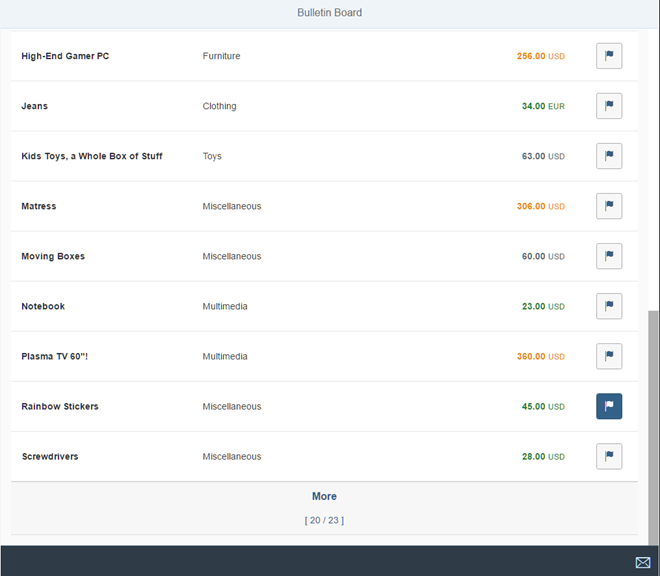

Step 7: Changing the Table to a Growing Table
Let’s switch back to developing and add the missing feature for the test we implemented in the previous step. We will simply change the table to a growing table as this is a basic feature of the table. This will display a trigger at the end of the table that the user can click on to display more items.
Preview

The List of posts is now dynamically loading more items when we scroll to the
end of the pageCoding
You can view and download all files in the Samples in the Demo Kit at Testing - Step 7.
webapp/view/Worklist.view.xml
<mvc:View …
<semantic:FullscreenPage
id="page"
title="{i18n>worklistViewTitle}">
<semantic:content>
<Table
id="table"
growing="true"
width="auto"
…
>
…
</Table>
</semantic:content>
…
</semantic:FullscreenPage>
</mvc:View>
We simply set the parameter growing to true to enable our feature. Now we can run the integration test that we just wrote in the previous step and it should not fail anymore. Similarly, if we run the app, we now see only 20 items initially. And if we choose the More button then three more items are loaded.
Conventions
-
Use OPA tests for UI-related integration tests